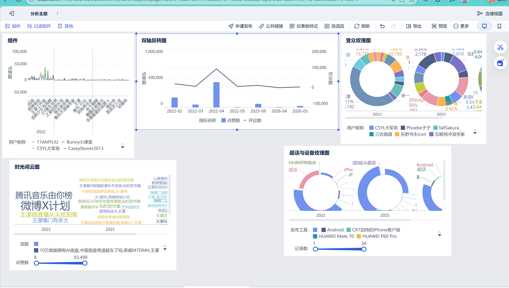

基于数据驱动与社会心理学视角的综合洞察
本项目不仅展示 FineBI 的前端可视化，底层更依托严谨的 Excel 数据清洗与统计。本组采集并处理了从 2022年2月至 2026年5月 跨度长达四年的社交媒体互动数据。
经过降噪与筛选，最终锁定 249 条核心爆款图文及视频作为分析主源。Excel 统计结果显示，该样本库累计覆盖了 784,639 次点赞、145,705 次评论以及 693,910 次转发，总计捕捉了超过 162万次的网民深度互动样本，为后续的舆情趋势与心理动机分析提供了极其扎实的数据支撑。
结合 FineBI 可视化大屏中的四维数据（趋势双轴、推手成分、话题词云、受众阵地），公众情绪完成了一次典型的从“光环效应 (Halo Effect)”向“商业化祛魅”的集体心理降级：
这也印证了传播学的一大规律：一旦脱离了特定的家国情怀语境，单纯的流量变现极易引发公众的心理防线反弹与审美疲劳。
下图为我们在数据分析过程中制作的核心大屏图表静态展示：

点击下方按钮，访问包含双轴反转图、大V成分饼图、时光词云及受众玫瑰图的完整动态大屏：
🚀 访问 FineBI 交互式数据大屏